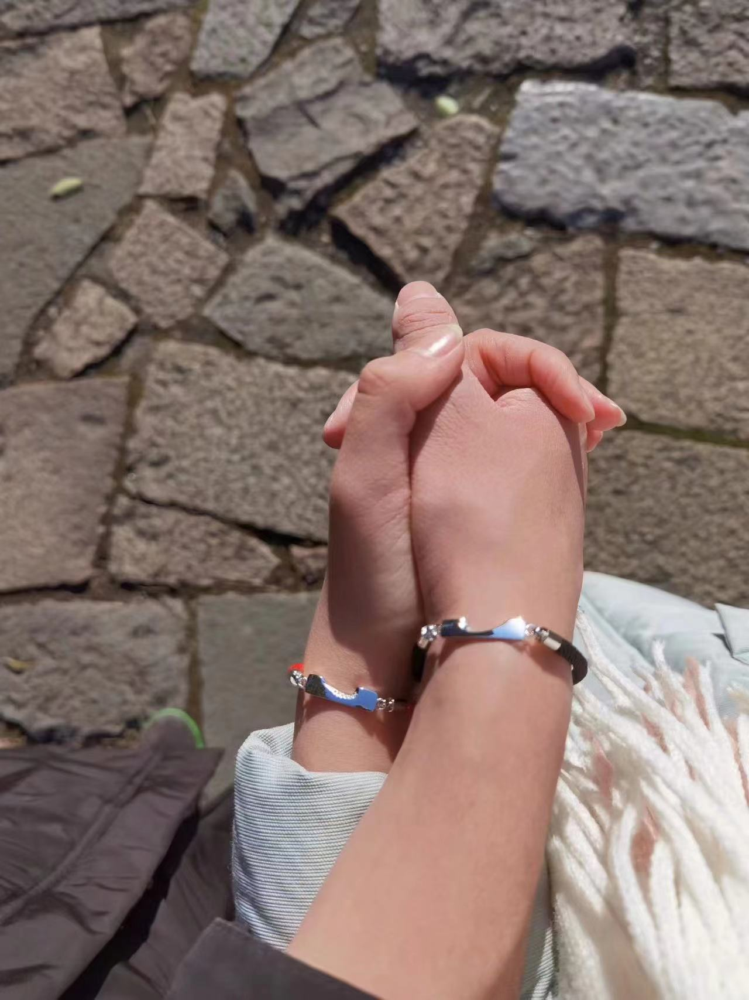
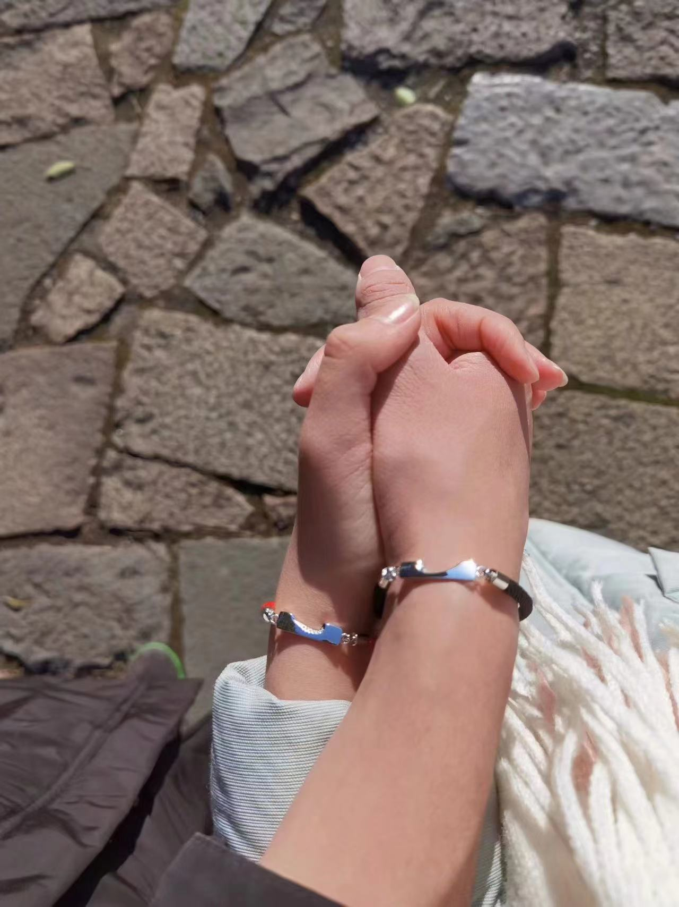

520快乐！李治颖我真的还很喜欢你
一年前你生日的时候你说下次能不能变成网页，其实我一直记着，但你生日那段时间确实一直忙着搞论文也没研究这些咋弄，这段时间我研究了一下，想着趁520做一个。你那天说再试两个月，你试着改变想法我试着忘记你，让我别抱希望。你说我怎么可能不抱希望不想如果能和好有多好呢，说实话现在我最牵挂的事最想要得到的就是这个事了。现在也快一个月过去了，我真的很难做到，前两天连着梦到你，醒来的时候感觉真的很难受。我还是一直憧憬着我们美好的未来，我觉得你也会有吧，我也觉得我们还是很有感情的。其实你说的问题有可能是想的太早，但当然我也确实没有表现出你想要的安全感，但我真觉得我也不是对未来没追求没想法的人，现在可能就是你也说了，生活环境啥的也都没有压力，我也没有表现出这些的想法，我们也没有好好聊过这些。但是真的，我相信我们之后碰到这些事多谈谈就不会有这些担忧了，我不会不值得托付的。我之后也一定会多跟你谈谈这种以后的事，谈谈未来谈谈规划等等。
我们真的能有未来的，只要我们以后共同把这些事情放在心上，多聊多商量就不会有问题的。不会像你说的那样想过和好但觉得没可能，真的可以对我对我们有点信心的。更不会说我俩一起会进步不了，真的是不可能的，我们一起一定可以共同进步变得更好的。我也会在你低落的时候帮你，以前能想到的想不到的我都会做好的，该怎么做会怎么样我也真的说了太多太多了，请你相信我吧。我今天下午在外面没电脑然后突然要用电脑，说实话我第一时间想起来的就是找你，后来也没找别人帮忙。我骑公共电动车的时候还想起第一次骑公共电动车还是和你一起去宁波的时候。
我觉得我也不给你压力了，说难听点我也只能尽人事听天命了，我现在能做的真的很有限。你也有自己的想法，多的话我也真的说了很多很多了，我觉得你肯定也有认同的。我是真的忘不掉你，真的很喜欢你，也没法忘掉我们过去的美好，我真的希望我们能重归于好，无论以什么样的方式。
如果可以，从现在开始以后的一些纪念一些话包括照片啥的我也会把他们记在这里，当作我们恋爱的一个见证吧，这样在很久很久以后他也会变得很有价值的,可能现在还有些简陋，但我之后也会慢慢学习努力完善它的。

 

四年时间真的是转瞬即逝，可能就是美好的时光总是那么短暂吧，我现在回想起来感觉最后一年比前三年加起来都要长。在我心里我其实还是一直把你当作我的女朋友看待所以这么个日子我还是想说一句四周年快乐。今天我不想再多向你表达我对你的感情了，相信这么久了不管你心里对我的态度是好是坏你都能感受到我对你的情感始终如一，深沉而且坚定，即使是现在的状态也依旧如此。这个也从来不是也不会是我们分开的原因。我想说说我对以后的一些想法和一些比较实际的问题的看法，首先到了研究生，第一年应该都会有课，可能也不存在异地之类的问题，联络这些也一定会相对频繁。但到了你去嘉兴的后面两年，首先我的科研我会自己保证好，不会用耽误学习的时间来找你（我相信你也不希望我因为你而耽误这些事），我会合理安排时间，在没有特殊情况的基础下，争取让我们至少两个礼拜见一次面，这是在你不回杭州的基础上。我真的之后会更加细心更加尽心地去经营我们的感情。在你毕业后工作的前两年，那可能是我比较繁忙的两年，具体的肯定是要根据之后那个时候的情况来讨论，也许你可以多用周末的时间来找我，无论如何，我可以肯定的是，无论我有多忙你有多忙，你一定会是我最想见也最渴望相见的人。
如果你的工作会在北京。前两天我在我们的毕业生群里看到一个北京一个蛮好的公司的招聘信息，我也想到了这方面的事情。就是实话实说我的家庭应该是大概率留在杭州的，说你去哪我就去哪这种话一定不现实，我也肯定会考虑我爸妈我妹妹，可能更倾向上海杭州的工作地点。但如果真的机会好，我又怎么会不愿意去更大的地方呢。现在交通也方便，想要能够一个月回家看一次也一定是方便的。而且相比于与他们之间如此紧密的血缘关系，我一定也会更花精力在我们俩这样刚刚组建起的关系上呀。我们都生在杭州长在杭州，甚至我们的老家都在一个镇里，这些方面的问题我觉得相比其他的大学情侣一定更有优势吧。
反正说到这里我的意思就是，未来我真的能做好，我们之间存在的这些隐性的问题我也认真思考过，真的是可以解决的。当然具体的事宜肯定是到了具体的情况下再抉择的，但在有爱情以及有感情基础的情况下，我们也都不是笨蛋，我觉得在分析讨论之后我们每次一定能够做出综合来说对我们最有利的决定。还是那句话真的，我真的很想找回你，真的很想和你复合。我真的可以值得你托付，我也一定会在未来做得更好。但我也不会逼着你怎么样，我完全可以接受你慢慢来，慢慢改变心里的矛盾。我只想告诉你我真的很喜欢你很想你成为我未来最亲密最值得信赖的另一半，我真的也觉得我们的未来无限美好。我只希望我们能变好，慢慢变得比以前更好，成为彼此的依靠，携手走向未来广阔的世界。